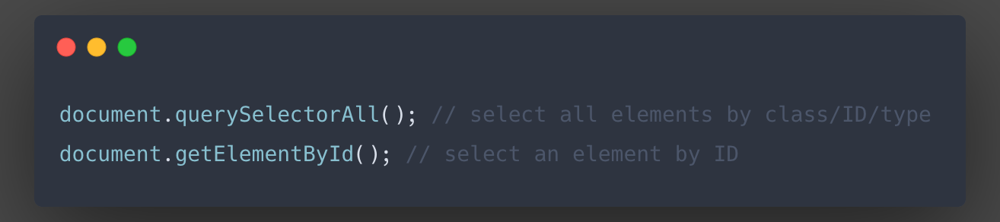
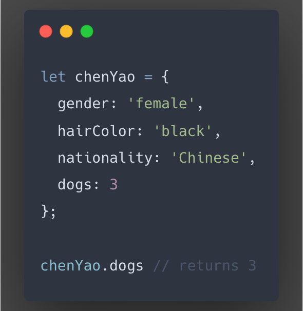
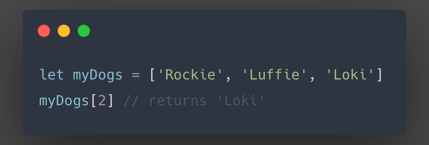
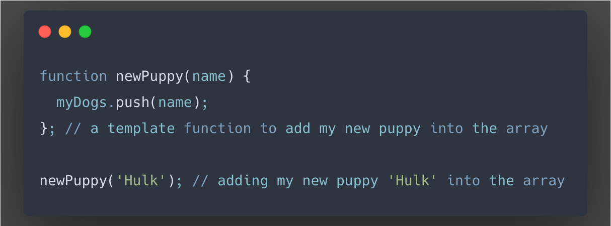

JS Fundamentals
13 February 2022 | Chen Yao
JS Fundamentals
13 February 2022 | Chen Yao
You would have seen “HTML” from time to time when looking at an external link on your favourite web page or staring at the URL bar for time killing. Now what’s “CSS” and how’s it different from “HTML”? Both are programming languages that we use to build a beautiful web page. Then why can’t we just use one language? What’s the difference?
An easy way to look at this is to think of “HTML” and “CSS” as creating a new character in the SIM City game. Everyone would have played this game or something similar. If you’ve never played a game before, well, good for you and you’ve missed a lot. Let’s just say it is a game where you can create a little person to live in a city like a real human. The first step would be to create the character.
You would see a universal default version of a little person at the beginning. That little person is indifferent to any other little person in other people’s game. But the person does have the basic human structure and features, just like in the lyrics of the child song “...head, shoulders, knees and toes, and eyes, and ears, and mouth, and nose...”. This little person, my friend, you can call them “HTML”.
Now here comes the exciting part. You are about to customize the features to make your own little person! You can do a lot of things with it, changing the colors of hair, eyes, mouth, skin, and deciding whether they want to dress up casual or formal. There are so much more you can do with your little person until you complete the masterpiece. “CSS”, is all those special features you add to your little person.
“The control flow is the order in which the computer executes statements in a script.”
“A loop is a sequence of instructions that is continually repeated until a certain condition is met in computer programming.”
from MDN: Control flow
When we write our codes, we need to be careful with the sequence of everything we write. The control flow means the computer will read and execute our statements from the top to the bottom (or skip to somewhere else and work from there, or jump back and continue). A simple change in the sequence will completely change the outcome. If you’re a calendar or to-do list person, you’ll go through your day following whatever events you put down in your calendar or your to-do list for the day in those specific orders. If you’re a spontaneous person, well, it’s like your cable TV always plays according to the preset schedule.
A loop is when the computer goes through your codes and it reaches the codes that tell it to compare a variable against another, and repeatedly executing the instructions until the condition is no longer met. A good example will be colouring your hair. Imagine if you have black hair and wishes to go silver like the picture below. It is a hard and long process and you’ll need to go through a few sessions of bleaching and dying until you’re satisfied with your hair color. That’s when you get out of the loop of coloring your hair.
Source: Introduction to the DOM
The Document Object Model (DOM) allows us to use JavaScript (or other scripting languages) to interact with HTML elements by representing the document (the web page we see) as nodes and objects. We can use
to select an element or a group of elements and call functions to add events to the element.
Its concept is similar to a mind map. You can categorize your minds in many ways, such as by the types, the objects, or even the font color. JavaScript is a language we use to make something happen to these minds, such as changing its color, changing the font, or replacing the whole content.
DOM represents all the elements in HTML as a node or object. The HTML itself is a tree consisting of these nodes and objects. This provides the targets for the scripting languages to operate on.
As CSS is the style sheet for HTML and it rules the style based on these nodes and objects, DOM also allows the scripting languages to interact with CSS rules (attributes). An example would be to use JavaScript to select a node/object to assign an event when a certain action is made to this node/object (e.g. click).
An object contains key values assigned to it. For example, my name is Chen Yao. I’m an object. My gender is female, my hair color is black, my nationality is Chinese and I have three dogs. Those can be my key values. It looks like this in JavaScript followed by how I want to see the number of dogs I have:
An array contains a list of items. For example, my three dogs’ names can be included in an array called myDogs. If I want to see the name of my 3rd dog, it’d look like this in JavaScript:
We use functions to interact with elements, objects, arrays, variables and etc. We set up a template function for it to execute a specific task. I can set up a function called newPuppy. Taking the array example from above, when I get another dog, the script will call the function as below:
Functions are important because they let us set up specific order(s) and we can call them into action at any time as we code without repeatedly writing the same lines of codes. Say in about 10 years, I get another puppy and I want to add her name in the myDogs array. All I need to do is call the newPuppy function again.
Functions are also extremely useful in keeping our codes neat and tidy if used together with comments. For example, in 50 years, I try to tell some life stories to my grandchild but I lose my memory from time to time. I look at the code newPuppy(’Hulk’) and wonder what this is. I read the template (or read the comments if I kept that good habit), I can easily understand that I got a new puppy back then and I named her Hulk.